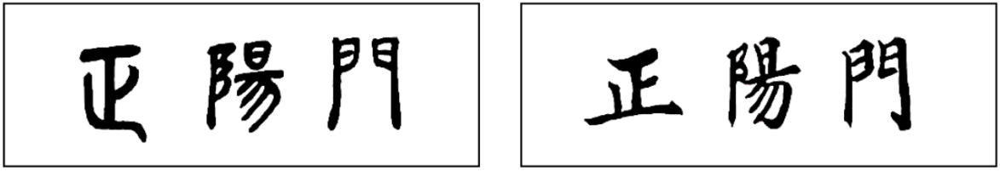

2021年北京市中考语文试题 原卷解析
2021年北京市中考真题语文
考生须知：
1.本试卷共12页，共五道大题，23道小题，满分100分。考试时间150分钟。
2.在试卷和草稿纸上准确填写姓名、准考证号、考场号和座位号。
3.试题答案一律填涂或书写在答题卡上，在试卷上作答无效。
4.在答题卡上，选择题用2B铅笔作答，其他试题用黑色字迹签字笔作答。
5.考试结束，将本试卷、答题卡和草稿纸一并交回。
一、基础·运用（共14分）
2021年，北京中轴线申请世界文化遗产工作进入关键阶段，已确定了包括天安门、正阳门、天坛在内的14个遗产点。学校组织了“中轴线上多彩明珠”展示活动，你所在班级负责制作宣传正阳门的短片。
1. 短片第一部分，介绍正阳门在历史上的重要功用。下面是同学们找到的一则材料。
正阳门曾是国家的礼仪之门。作为明清两代都城的正门，正阳门在京师诸门中规制最高。皇帝每年去天坛祭天和到先农坛亲耕，都要通过正阳门。所谓“正阳门走龙车”，就是指此门只供皇帝出入。
正阳门还曾是京师锁钥。当时的正阳门包括城楼、箭楼、瓮城、闸楼，它们形成了严密的军事防御系统：城楼供守城将领登高瞭望，指挥作战；箭楼在城楼正前方，开有箭窗，用于防御、射击；瓮城将城楼与箭楼连为一体，形成对城门的保护；闸楼则建于瓮城之上，其门洞上方的千斤闸重约1990公斤，在敌军进犯时可起到重要防御作用。
（1）短片第一部分要从以下两幅字中选择一幅作片头，来体现正阳门的特点。请你选择并说明理由。

甲 乙
选择：____________
理由：____________
（2）同学们在《古代汉语词典》中查到“钥”的义项有：①锁；②钥匙；③闭锁，关闭。根据文段内容及词典释义，你认为“锁钥”在这里的意思是（ ）
【甲】进入京城的通道 【乙】军事防御屏障 【丙】沉重的千斤闸
2. 短片第二部分，讲述正阳门的沧桑历史。下面是同学们写的文字稿，请帮他们解决在配音和制作字幕过程中遇到的问题。
正阳门的前身是元大都的丽正门，明代改名为正阳门，距今已有六百多年的历史。
明末，起义军兵临北京，正阳门的守卫弃城投降，沉重的千斤闸形同虚设，①____清末，厚重的城墙没挡住八国联军的枪炮，在城楼上设岗巡逻的竟已是外国士兵。那时在民间流传的歌谣“今日正阳门左右，外人随意立高墙”，诉说的正是这段屈辱的历史，②_____在很长一段时间里，正阳门都笼罩在战争的阴霾之下。曾经的礼仪之门失去了皇家威严，曾经的防御系统也土崩瓦解。龙车凤辇、黄柄华盖的洪大场面已经消失，原来只有皇帝通行才能开启的正阳门，悄然融入了普通人的生活。
1949年，北平和平解放，正阳门箭楼高挂“欢迎人民解放军”的红色标语。在飘扬的红旗和热情的欢呼声中，正阳门翻开了新的一页。
（1）有同学对①②两处使用的标点符号有疑问，你认为这两处的标点符号使用正确的是（ ）
A.①；②。 B.①；②，
C.①。②。 D.①。②，
（2）有同学认为画线词语中有错别字，对加点字的读音也有疑问。下列判断错误的一项是（ ）
A.“流传”应写为“留传” B.“笼”应读为“lǒng”
C.“洪大”应写为“宏大” D.“悄”应读为“qiǎo”
（3）根据语境，画波浪线的句子表达欠妥，请修改。（2分）
修改：__________________
3. 短片第三部分，是同学们制作的“我眼中的正阳门”采访视频。下列四位被采访者说话时用了成语或修辞方法，其中不恰当的一项是（ ）
A. 游客：“登上正阳门，我的敬意油然而生。古人太聪明了，城楼既坚固又美观。城砖的灰、城门的红、琉璃屋顶的绿和彩绘的金，搭配多和谐啊！”
B. 生态保护志愿者：“正阳门是北京雨燕的重要栖息地。每年3月雨燕都会和正阳门不期而遇，8月它们又从正阳门飞往非洲，给远方捎去中国的消息。”
C. 附近居民：“老北京人管正阳门叫‘前门楼子’。前门大街是大家都爱逛的地方，到处是好玩的、好吃的，嗓子眼儿冒烟的时候来一碗大碗茶，舒服极了！”
D. 正阳门博物馆讲解员：“如今的正阳门作为北京历史文化的重要载体，伫立在北京中轴线上，诉说着昔日的荣光、过往的沧桑，成为一部土石写就的史书。”
4. 短片结尾，需要几位同学各用一种颜色表达对正阳门的理解。请你结合短片的内容，按照示例，仿写句子。
示例：我心目中的正阳门是绿色的。绿色既是城楼屋顶琉璃瓦的颜色，也是人与北京雨燕和谐相处的象征。
【答案】1. ①. （1）示例一：选甲 ②. 甲是古朴的篆书，能体现正阳门古老的特点。 示例二：选乙 乙是端正的楷书，能体现正阳门端庄的特点。 ③. （2）乙
2. ①. （1）C ②. （2）A ③. （3）曾经的防御系统土崩瓦解，曾经的礼仪之门也失去了皇家威严。 3. B
4. 示例：我心目中 正阳门是灰色的。灰色既是城砖的颜色，也是正阳门沧桑历史的象征。
正阳门是灰色的。灰色既是城砖的颜色，也是正阳门沧桑历史的象征。
【解析】
【分析】
【1题详解】
（1）本题考查字体鉴赏。甲字体为小篆，是在秦始皇统一六国后创制的汉字书写形式；乙笔画端正，横平竖直，为正楷。根据字体的特点，结合正阳门的特点选择。选甲，小篆古朴，能体现正阳门古老的特点。选乙，楷书端正，能体现正阳门端庄的特点。
（2）本题考查结合语境理解词义。根据下文“当时的正阳门包括城楼、箭楼、瓮城、闸楼，它们形成了严密的军事防御系统”可知“锁钥”在这里的意思军事防御屏障。故选乙。
【2题详解】
（1）C.句号：用于陈述句末尾，表示一句话的结束。①处写“明末，起义军兵临北京，正阳门的守卫弃城投降，沉重的千斤闸形同虚设”，下一句写“清末”，因此可以判断前一句表达的意思已经结束，所以应该用句号。②处那时在民间流传的歌谣诉说的正是这段屈辱的历史，表达的意思完整，因此也应该用句号。故选C。
（2）A.句中“流传”是正确的。“流传”和“留传”的区别，“传”的范围不同。“流传”既是纵向的，指时间上的由前往后；又是横向的，指空间上的由此及彼。而“留传”只能是纵向的，它只能传下去，而不能传开来。句中形容歌谣的传播，“流传”没有错。故选A。
（3）本题考查病句的识别和修改。语序不当。将“曾经的礼仪之门失去了皇家威严”与“曾经的防御系统也土崩瓦解”调换位置。
【3题详解】
B.不期而遇：没有约定而遇见，指意外碰见。句中说每年3月雨燕都会来正阳门，就不是“意外碰见”。故选B。
【4题详解】
本题考查仿写。注意句式相同，内容相关。我心目中的正阳门是红色的。红色既是正阳门城门的颜色，也是北平和平解放人们迎来新希望的象征。
二、古诗文阅读（共17分）
（一）默写。（共4分）
5. （1）采菊东篱下，____________。（陶渊明《饮酒》）
（2）是故_____________，教然后知困。（《礼记》）
（3）同学们参观革命纪念馆，被先烈们忧家国、求真理、无惧牺牲的事迹深深感动。请从古诗文中选择两句来表现先烈们的精神，你选择的是“①________，②_________”。（本试卷中出现的句子除外。每句中允许有一个不会写的字用拼音替代）
【答案】 ①. （1）悠然见南山 ②. （2）学然后知不足 ③. （3）示例一：①粉身碎骨浑（或“全”）不怕 ④. ②要留清白在人间。示例二：①先天下之忧而忧②后天下之乐而乐
【解析】
【详解】作答此题时，要求句子符合题意，书写正确，不添字，不漏字，字的笔画写准确。注意“悠”易写成别字。（3）示例：人生自古谁无死，留取丹心照汗青。
（二）
阅读《黄鹤楼》，完成下面小题。
黄鹤楼
崔颢
昔人已乘黄鹤去，此地空余黄鹤楼。
黄鹤一去不复返，白云千载空悠悠。
晴川历历汉阳树，芳草萋萋鹦鹉洲。
日暮乡关何处是？烟波江上使人愁。
6. 诗歌颔联、颈联用精当的词语写出了景物的特点：用“悠悠”形容白云的飘荡无定，用“①______”形容汉阳树的清晰可数，用“萋萋”形容②______。
7. 《藤野先生》中有这样一段文字：“我就往仙台的医学专门学校去。从东京出发，不久便到一处驿站，写道：日暮里。不知怎地，我到现在还记得这名目。”有人推测鲁迅“还记得这名目”与本诗尾联抒发的情感有关，你认为这种推测合理吗？请说明你的理由。
【答案】6. ①. ①历历 ②. ②芳草的茂盛
7. 示例：合理。“日暮”时分万物思归，而诗人漂泊在外，产生了无限乡思。求学途中的鲁迅见到供人住宿的驿站名为“日暮里”，很可能联想到“日暮乡关何处是”，生发了对家国的思念，所以“记得这名目”。
【解析】
【分析】
【6题详解】
本题考查品析词语。题空一：“晴川历历汉阳树”意思是：阳光照耀下的汉阳树木清晰可见；历历：清楚可数。因此填“历历”。题空二：“芳草萋萋鹦鹉洲”意思是：鹦鹉洲上芳草繁茂；“萋萋”形容芳草的茂盛。
【7题详解】
本题考查探究情感。“日暮乡关何处是”，在日暮时分怀念家乡，这句诗表达了漂泊在外的诗人的思乡之情。鲁迅在日本仙台学医，远离故国，心中也有无限的家国情思吧！当看到“日暮里”，联想到“日暮乡关何处是”，生发对家国的思念是极有可能的。因为情感的相通，所以这种推测是合理的。
（三）
阅读两篇短文，完成下面小题。
孙权劝学
《资治通鉴》
初，权谓吕蒙曰：“卿今当涂掌事，不可不学！”蒙辞以军中多务。权曰：“孤岂欲卿治经为博士邪！但当涉猎，见往事耳。卿言多务，孰若孤？孤常读书，自以为大有所益。”蒙乃始就学。及鲁肃过寻阳，与蒙论议，大惊曰：“卿今者才略，非复吴下阿蒙！”蒙曰：“士别三日，即更刮目相待，大兄何见事之晚乎！”肃遂拜蒙母，结友而别。
诫子书
诸葛亮
夫君子之行，静以修身，俭以养德。非淡泊无以明志，非宁静无以致远。夫学须静也，才须学也，非学无以广才，非志无以成学。淫慢则不能励精，险躁则不能治性。年与时驰，意与日去，遂成枯落，多不接世，悲守穷庐，将复何及！
8. 下列选项中加点字的意思都相同的一项是（ ）
A. 乃始就学 一蹴而就 就事论事 功成名就
B. 结友而别 别来无恙 久别重逢 依依惜别
C. 无以致远 勤劳致富 闲情逸致 学以致用
D. 意与日去 去国怀乡 相去甚远 去粗取精
9. 下列对文中画线句的翻译和理解，全都正确的一项是（ ）
【甲】但当涉猎，见往事耳。
翻译：只是应当广泛地阅读，了解一些历史事件。
理解：孙权认为吕蒙阅读面窄，建议他在学习经学之外，还要学点历史。
【乙】大兄何见事之晚乎！
翻译：兄长怎么这么晚才知道这件事呢！
理解：鲁肃很晚才知道吕蒙有管理才干，吕蒙对此感到很失望。
【丙】非学无以广才，非志无以成学。
翻译：不学习就无法增长才干，不定下志向就无法学有所成。
理解：“才”“学”“志”关系紧密，“才”要依靠学习来增长，而学习的效果则与“志”有关。
10. 根据两篇短文及下面两则材料，在后面语段中的横线上填写恰当的内容。
【材料一】
初，遇①善治《老子》。人有从学者，遇不肯教，而云“必当先读百遍”。从学者云：“苦渴无日。”遇言：“当以三余。”或问三余之意，遇言：“冬者岁之余，夜者日之余，阴雨者时之余也。”
（取材于《三国志·魏志·王肃传》裴松之注）
【材料二】
予少时读书，一见辄能诵，虽有强记之力，而常废于不勤。比数年来，颇发愤自惩艾②，悔前所为，而聪明衰耗，殆不如囊时③十一二。故虽然有勤苦之劳，而常废于善忘。
（取材于秦观《〈精骑集〉序》）
注：①[遇]指董遇，东汉学者。②[惩艾]惩治，惩戒。③[囊时]从前。
学习过程中总会遇到一些障碍，如吕蒙所提“①______”，跟随董遇学习的人所说“②______”，都认为自己没有足够的时间来学习，这需要人们立志勤学来解决。而诸葛亮告诫儿子要警惕“年与时驰，意与日去”，秦观“悔前所为，而聪明衰耗，殆不如囊时十一二”的经历，则进一步提醒人们③______。
【答案】8. B 9. 丙
10. ①. ①军中多务 ②. ②苦渴无日 ③. ③趁青春年少抓紧时间学习
【解析】
【8题详解】
考查对多义词的辨析。
A.从事/成功/根据/完成；
B.都是“分别”的意思；
C.达到/达到，实现/情趣/达到，实现；
D.逝去/离开/距离/除去，除掉；
故选B。
【9题详解】
甲句错误，正确翻译是：只是应当粗略地阅读，了解历史罢了。重点词语，涉猎：粗略地阅读。往事，指历史。甲句理解有误，孙权认为吕蒙因“当涂掌事”的重要身份而“不可不学”，声明要求他读书的目的并非使他弃武从文，成为书生，而是在博览群书中了解历史，从中汲取经验教训，增加自己的见识与才智；
乙句错误，正确翻译是：长兄知晓这件事怎么这么晚呢！重点词语，见事，知晓事情。乙句理解有误，“士别三日，当刮目相待，大兄何见事之晚乎”是吕蒙对鲁肃赞叹的巧妙接应。“三日”形容时间很短，“刮目”是擦拭眼睛，表示十分惊奇、难以置信的样子。从吕蒙的答话中可见他颇为自得的神态，他以当之无愧的坦然态度，表明自己才略长进之快之大；
故选丙。
【10题详解】
考查学生的分析比较能力。根据题干中的提示从文中分析语句作答。
第一空，根据“学习过程中总会遇到一些障碍”的提示，从《孙权劝学》中寻找句子，孙权作为吴国之主，他鼓励吕蒙要多学习，而吕蒙却以“军中多务”找借口推托。
第二空，由题干中“跟随董遇学习的人”“都认为自己没有足够的时间来学习”，不难找到材料一中的语句“苦渴无日”，即是答案；
第三空，秦观在这篇短文中叙述了他自己年轻时凭借记性好不勤奋苦读，以至后来常因善忘而毁坏学业的情况。他后悔自己以前的行为，意在告诫提醒人们：要珍惜青春岁月多读书，勤奋学习，以免老大徒伤悲。
【点睛】参考译文
【一】当初，孙权对吕蒙说：“你现在当权掌管政事，不可以不学习！”吕蒙用军中事务繁多的理由来推托。孙权说：“我难道是想要你研究儒家经典成为传授经书的学官吗？只是应当粗略地阅读，了解历史罢了。你说军中事务繁多，谁能比得上我呢？我经常读书，（我）自认为（读书对我）有很大的好处。”吕蒙于是就开始学习。等到鲁肃到寻阳的时候，和吕蒙论议国家大事，（鲁肃）惊讶地说：“你现在的才干和谋略，不再是以前那个吴县的阿蒙了！”吕蒙说：“士别三日，就要另外用新的眼光看待他，长兄知晓这件事怎么这么晚呢！”于是鲁肃拜见吕蒙的母亲，与吕蒙结为朋友才分别。
【二】有道德修养的人，依靠内心安静来修养身心，以俭朴节约财物来培养自己高尚的品德。不恬静寡欲无法明确志向，不排除外来干扰无法达到远大目标。学习必须静心专一，而才干来自勤奋学习。如果不学习就无法增长自己的才干，不明确志向就不能在学习上获得成就。纵欲放荡、消极怠慢就不能勉励心志使精神振作，冒险草率、急躁不安就不能修养性情。年华随时光而飞驰，意志随同岁月而丧失。最终枯败零落，大多不接触世事、不为社会所用，只能悲哀地困守在自己穷困的破舍里，到时悔恨又怎么来得及？
【材料一】当初，董遇对《老子》很有研究，有读书人想向他求学，他不肯教，却对人家说:“一定应当先读很多遍书”。请教的人说：“（您说的有道理）只是苦于没有时间。”董遇说：“应当用三余时间。”有人问“三余”是什么？董遇说:“冬天，没有多少农活。这是一年中空闲下来的时间；夜晚，不必下地劳动，这是一天中空闲下来的时间；雨天，不方便出门干活，也是空闲下来的时间。”
【材料二】我年轻时读书，看一遍就能背诵。即使有很强的记忆力，也常常荒废在不勤奋上。近几年来，用发愤读书的态度来惩戒自己，后悔以前的行为；但聪明智慧已经衰竭，几乎比不上早先的十分之一二。因此，我虽然勤奋下苦功读书，却常常因为善忘而荒废了学业
三、名著阅读（5分）
11. 你准备参加学校举办的“奋斗吧，青年！”主题演讲比赛，要从读过的名著中选择合适的人物作例证，请说明你的选择和理由。（100字左右）
【答案】示例：我选《钢铁是怎样炼成的》中的保尔。他虽身处残酷的战争环境，且饱受各种疾病的折磨，却始终保持奋斗的激情，让自己拥有了充实而有价值的青春。他的事迹可以作为例证鼓励青年人努力奋斗，不负青春年华。
【解析】
【详解】本题考查语言表达。示例：我选《鲁滨逊漂流记》中的鲁滨逊。他流落荒岛，在绝境面前不悲观、绝望。他凭借自己的智慧、折不屈不饶的精神，在荒岛生存了二十八年。他善于劳动，热爱生活，乐观向上。他的事迹可以燃起青年的奋斗激情，他的精神可以赋予青年无限的力量，在大好的青春年华，奋斗不止！
四、现代文阅读（共24分）
（一）
阅读下面材料，完成下面小题。
【材料一】
2021年3月，《北京市“十四五”时期智慧城市发展行动纲要》正式颁布，到2025年，北京将建设成为全球新型智慧城市的标杆城市。
智慧城市是以5G、大数据、人工智能、区块链等一系列科技创新成果为基础的城市、其“智慧”体现在及时捕捉并报送信息、快速而精准地分析海量数据、迅速给出应对方案等方面。就像一个“智慧”的人，能通过感觉器官敏锐地获得信息，通过神经系统迅速传输给大脑，大脑马上作出判断并形成处理问题的策略。智慧城市的感觉器官是包括摄像头、传感器等在内的信息收集系统，神经系统是互联网等数字信息通道，大脑则是城市智能运营指挥中心。
建设智慧城市，能有效提高政务管理效能。比如，工作人员巡查时发现一处井盖损坏，打开“大城管”APP，拍照，上传井盖信息；网络后台调用城市大脑相关数据比对研判；处置单位收到工单，赴现场更换井盖。整个过程仅用三四个小时，而以前处理此类情况最快也要一天。
【材料二】
智慧城市强调技术，但不是被技术制约，而是人在利用技术，更是以人为中心，目的是为人们提供更广泛、更深入的服务。生活在智慧城市里，人们的生活会越来越便利。
智慧城市管理系统实现了“让数据多跑路，让人少跑腿”，办事减少了程序，节约了时间，也不再受地点的限制。近几年，“首都之窗”网站就提供了“上一网、交一表、找一人、办一次”的便民服务。北京交通行业政务服务也已经实现了“一网通办、全程网办、跨区协办、全市可办”，申请人可在任何地方上网办理业务，而不必跑到固定的办事地点。
建设智慧城市带来的便利还体现在能解决特殊时期的困难。新冠肺炎疫情期间，需要人们尽量少去人流密集的场所，这给需要就医的病人带来了困难。为此，北京市各区纷纷上线“智慧家医”远程服务，将问诊从线下转移到线上，医生通过在线交流提供就诊服务，有效减少了病人去医院就诊时交叉感染的风险。
【材料三】

在建设智慧北京的过程中，城市基础设施的智能化水平、整体数据治理能力日益提高，这样的条件自然会吸引众多高科技产业落地，从而促进数字经济的发展。
智能网联汽车是无需司机操作的自动驾驶汽车，该行业是未来产业发展的战略制高点。但汽车实现自动驾驶离不开智能化的道路、专用的信息网络等基础设施，换句话说，要发展“聪明的车”，得先建设“智能的路”。北京在道路智能化方面表现突出，因此在推进自动驾驶车辆上路测试方面进展迅速。2018年到2020年，____________。
正因为具备这些优势、2021年5月，北京成为全国首批“智慧城市基础设施与智能网联汽车协同发展”项目的试点城市之一。该项目对业内高端企业极具吸引力，将促进物联网、人工智能以及半导体等产业的快速发展，具有极大的经济价值。
未来，北京不仅有“聪明的车”“智能的路”，还有“新型的经济”，而“协同发展”项目不过是智慧城市中数字经济发展的一个例子。智慧的北京，一定比你想象的更美好。
12. 下列对“智慧城市”中“智慧”的理解，不符合文意的一项是（ ）
【甲】以获得科技创新成果为目的
 乙】及时捕捉信息并且快速上报
乙】及时捕捉信息并且快速上报
【丙】快速而精准地分析海量数据
13. 根据材料三的内容和图1的信息，下列在文中横线处填入的内容，准确的一项是（ ）
【甲】北京市智能化道路总里程数增加了二百多万公里
【乙】北京市自动驾驶车辆道路测试里程逐月缓慢增长
丙】北京市自动驾驶车辆道路测试里程逐年快速增长
14. 从上述三则材料可以看出，建设智慧城市的好处有：①________、②_________、③________。（每空限10个字以内）
【答案】12. 甲 13. 丙
14. ①. 示例：①提高政务管理效能 ②. ②便利市民生活 ③. ③促进数字经济发展
【解析】
【分析】
【12题详解】
甲.根据材料一“其‘智慧’体现在及时捕捉并报送信息、快速而精准地分析海量数据、迅速给出应对方案等方面”，不包括“以获得科技创新成果为目的”。故选甲。
【13题详解】
本题考查获取图表信息的能力。
甲.根据图表可知，北京市智能化道路总里程数由15——109，增加了不到一百万公里。“增加了二百多万公里”有误；
乙.根据图表可知，2018年15万公里到2019年104万公里，增长快速，理解为“缓慢增长”不正确；
故选丙。
【14题详解】
本题考查内容提炼概括。根据材料一第三段“建设智慧城市，能有效提高政务管理效能”提炼：提高政务管理效能；根据材料二第一段“生活在智慧城市里，人们的生活会越来越便利”提炼概括为：便利市民生活；根据材料三第一段“这样的条件自然会吸引众多高科技产业落地，从而促进数字经济的发展”提炼：促进数字经济发展。
（二）
阅读下面的作品，完成下面小题。
①父亲是村里公认的棋王。农闲时总有人找父亲对弈。无论对方棋艺如何，父亲总是认真对待，经常让对方乘兴而来，又连输数盘败兴而去。母亲有时会劝父亲：“你就不能让着人家一点？这么不给人家面子，以后谁还理你！”父亲扬起眉毛说：“不给面子，找我下棋的人也没少，还越来越多呐！”
②我从小就被父亲带入讲智谋、拼勇气、权取舍的象棋世界。起初我分不清“马别腿”，也不懂各兵种的配合，一味追求杀得痛快，往往为了吃一个棋子而损失惨重，于是悔棋成了家常便饭。父亲尽管无奈，也只能苦笑着同意。等我完全学会规则，父亲的态度就变了。一次对弈前他严肃地跟我说：“从今天开始，我让子不让棋。让几个子、让什么子，你说了算，一旦开始下棋，你必须落子无悔，我也决不手软。”我嘴上应承，心里却不以为意。一阵拼杀，我的“将”被逼得走投无路，我又习惯性地悔棋，父亲坚决不同意。母亲没好气地说父亲：“跟个孩子较什么真，你让他一步不行吗？”父亲说：“那不行，棋有棋的道，下棋讲究个落子无悔，为啥？棋子落地，板上钉钉。现在我让着他，以后谁让着他啊！”母亲摇了摇头，只得转而安慰我：“咱不跟他玩了，就知道欺负孩子。”母亲的话像催泪弹，我的眼泪立刻涌了出来，我哽咽着对父亲说：“再也不跟你下棋了。”
③总角小儿撑不过两天，又求着父亲下棋。父亲欣然同意，但声明仍要落子无悔。父亲前两天说的那番话我听得懵懂，倒也隐约明白了，不敢再漫不经心。
④高三下学期，我开始变得焦虑。脑中经常出现同学们不眠不休学习的画面，我愈加烦躁。尽管强迫自己打起精神学习，最终我还是落榜了，感觉希望从此破灭了，整天把自己关在屋子里。父亲若无其事地说：“大小伙子哪能整天在家里睡觉啊，起来跟爸杀几盘。”我置若罔闻。父亲不肯罢休，一边摆棋一边说：“你说这些棋子，‘车’能疾行千里，‘马’可蹄踩八方，而小‘卒’只能一步一步挪动，为什么还需要小‘卒'呢？”我从未想过这个问题，又不好意思问。父亲看了看沉默的我说：“你可别看轻了小‘卒'，虽然它每次只能走一步，却只进不退。对弈搏杀，往往是一“卒'决胜负。你要是不服气，就来试试！”
⑤明知父亲用了激将法，我还是忍不住接了招。谁知一连下了五局，倒有三局栽在了小“卒”上。我盯着棋盘发愣，父亲笑着说：“意外吧？‘过河卒子当车使'，‘过河'对卒子来说是一道坎儿。你现在就是小‘卒’，没过去这道坎儿。怎么样？敢不敢再做一次小‘卒'？”我瞬间感觉自己灰暗的世界“仿佛若有光”，用力点了点头。
⑥我如愿考上理想院校。倏忽间十多年过去了，整日为工作和生活所累，回家探望父母的次数屈指可数。不料父亲突然大病一场，为照顾他，帮他进行康复训练，我把父母接到了身边。经过半年多的努力，父亲基本恢复了行动能力，只是记忆力大不如前。改善这种情况最好的办法就是让病人多动脑，我第一反应就是多陪父亲下棋。
⑦可是下棋时我才发现，以前那个“乡村棋王”不见了，此刻的父亲拿起棋子半天不知该落往何处。有一次我实在受不了，就发牢骚：“爸，跟您下棋真急死人！”父亲像个受了委屈的孩子一样，嗫嚅着说：“我不想走错了悔棋。”我突然想起当年父亲教我下棋的情景，不禁鼻子一酸。羞愧、难过、（ ），一起涌上心头。
⑧后来父亲拿起棋子不知道该放哪儿时，我就指给他一个可以吃到我棋子的地方，又假装懊悔地说：“哎呀，我太大意了。”父亲赢了我，总会露出开心的笑容，话也多起来。母亲背着父亲对我说：“我都能看出来你是让着他，你忘了当初他不让你了？”
⑨我笑而不答，心里说：当初他不让我，是教我守棋道，这里面是有“义”的啊！今天我让着他，正是以“义”报之。棋中不仅有道、有理，其实更有“义”……
（取材于风疏的文章）
15. 文章写了“我”跟父亲下棋的往事以及其中的人生感悟：儿时下棋，①______，让“我”懂得守信的处世之道；高考失利，父亲以小“卒”为喻激励“我”，让“我”明白了②______的道理；父亲生病后，③______，是因为“我”领悟到棋中更有“义”。
16. 如果要在第⑦段画线句的括号内再补充一个词，你会填写什么词？请结合文章内容简要说明理由。
17. 请从“棋义”和“棋王”中选择一个作本文的题目，并结合文章内容说明理由。
【答案】15. ①. 示例：①父亲不许“我”悔棋 ②. ②面对挫折决不退缩 ③. ③“我”故意让父亲赢棋
16. 示例：敬佩 病中的父亲记忆力衰退了，却始终不忘棋道，让“我”由衷敬佩。
17. 示例一：选“棋义”。父亲教“我”下棋，更教“我”做人之道，教育“我”成长，这是父亲对“我”的“义”；为了帮父亲康复，“我”故意让棋，这是“我”对父亲的“义”。以“棋义”为题，点明了文章主旨。
示例二：选“棋王”。父亲不仅棋艺高超，更深明棋中蕴含道理，并用这些道理教育“我”成长；而“我”后来以“义”报答父亲也正是父亲教育“我”的成果。父亲堪称“棋王”，以此为题突出了父亲的形象，表意含蓄，令人回味。
【解析】
【分析】
【15题详解】
考查内容的概括。解答此题需要通读全文，注意时间地点的变化，梳理情节，以“什么人做了什么事有什么结果”的格式来概括。此文章按照时间顺序记叙事件，第1-3段写小时候，“我”跟父亲学下棋，父亲教育我要“落子无悔”；第4-5段写高中时，我高考失利，父亲以“小‘卒'只进不退”启发我在学习上面对挫折决不退缩，；第1-9段写十多年后父亲生病，我陪父亲下棋故意让他。据此填空即可。
【16题详解】
考查词语的含义。阅读第7段，本段主要写父亲病愈后，我和他下棋的事，父亲因为生病反应迟钝，下棋时不知棋子该落何处，我抱怨父亲，他嗫嚅着说：“我不想走错了悔棋。”此情引起作者“我”的感触：羞愧、难过、敬佩，一起涌上心头。羞愧，因为自己对父亲没有耐心；难过，因为父亲已经渐渐衰老；敬佩，因为父亲虽然年老生病记忆力衰退，但始终没有忘记遵守棋道，要“落子无悔”。题目已给出“羞愧、难过”，补充“敬佩”，并据此分析解答即可。
【17题详解】
考查给文章拟标题。题干备选“棋义”和“棋王”两个题目都可以，只要理由解释恰当即可。示例1：选“棋义”。全文围绕“义”来组织材料。小时候父亲教我下棋“落子无悔”是“棋义”。高考失利，父亲以“小卒只进不退”鼓励我遇到困难不退缩，这是“棋义”。父亲生病后，我故意让棋，则是我对父亲的“义”。“义”的精神贯穿全文，所以选“棋义”为题，点明、凸显文章主旨。
示例2：选“棋王”。开篇就写“父亲是村里公认的棋王。”他棋艺高超，并且遵守棋道，并用棋道教育子女成长：“落子无悔”教育孩子为人要诚信；“小卒只进不退”教育人遇到困难不退缩。老年生病后下棋，即使记忆力衰退，但他依然能坚守棋道。他在我心中是真正的“棋王”。文章以“棋王”为题，凸显父亲的形象，意蕴丰富，主旨鲜明。
（三）
阅读下面的文字，完成下面小题。
①百花盛开，青春正好。中国共产党即将迎来百年华诞。我们当代青年学习中国共产党的光辉历史，不应该只把它当作书本上的记录、展览馆中的文物，还应该_____________。
②中国共产党在百年伟大实践中形成的红色基因，是一笔宝贵的精神财富。这笔精神财富里有实现中华民族解放、实现共产主义的远大理想。李大钊曾满怀信心地预言：“试看将来的环球，必是赤旗的世界！”中国共产党一经成立，就把实现共产主义作为党的最高理想和最终目标。这一远大理想凝聚起先进的力量，从一条红船出发，掀起了中国革命的巨浪。百年历程中，在为人民解放而奋斗的理想指引下，中华民族摆脱了被压迫、被奴役的悲惨命运。在为人民的美好生活而奋勇向前的信念指引下，中国创造出了持续、快速发展的奇迹。
③你也许会想，树立远大理想是成年之后的事情，作为未成年的学生，我们首先要考虑学习的问题，长大后再树立远大理想也不迟。其实，树立远大理想要趁早。青年，对未来充满热情，最肯学习，最少保守思想，最具有创造未来的能力。早一点树立远大理想，我们就能早一点唤醒自身的潜力。今天，守边卫国、开拓创业、扶贫攻坚、科学探索，到处都有青年奋进的身影。他们把自我追求与人民对美好生活的向往结合起来，将青春汇入了民族复兴的时代大潮。
④这笔精神财富里还有在艰难时世中勇于克服困难、敢于牺牲、淬火成钢的意志品质。“儿已决意以身许国！革命不成功，立誓不回家。”红军将领王尔琢写下最后的家书，用生命践行了誓言；“未惜头颅新故国，甘将热血沃中华。”抗日英雄赵一曼慷慨赴义，甘用自己的热血浸染中华土地。百年以来，无数的烈士为中国革命和建设事业献出了宝贵的生命。壮烈的牺牲，昂扬奋进的精神，铸就了人民当家做主的新中国。
⑤你也许会想，红色基因是艰难时世的产物，这种淬火成钢的意志品质对和平年代的我们有何价值？其实，从来没有什么一帆风顺，困难、压力、挑战甚至灾难常会出人意料地出现，而淬火成钢的意志品质正是战胜一切困难的法宝。在新冠肺炎疫情最严重的时候，“共产党员先上！”的口号奏响了“战疫””的强音。无数青年医护工作者、志愿者继承了革命先烈无畏、担当的精神，毅然决然地奔赴“抗疫”战场。将“红色”作为青春的底色，这些青年便有了面对各种困难的底气与力量。
⑥世界面临百年未有之大变局，面对各种机遇和挑战，广大青年需要树立为国为民的远大理想，始终葆有淬火成钢的意志品质。让“红色”成为青春底色，我们就能凝聚起实现“中国梦”的磅礴力量！
18. 根据你对全文内容的理解，结合上下文，在第①段横线处填写恰当的内容。
19. 下列关于文章①-⑥段结构关系的图示，正确的一项是（ ）
【甲】 【乙】
【乙】 【丙】
【丙】
20. 下面是无产阶级革命家、军事家关向应的有关材料。请你结合材料的内容和上面的文字，简要说明他身上具有哪种红色基因值得我们继承。
关向应在致叔父的家书中写道：“愿终身奔波，竭能力于万一，救人民于涂炭，牺牲家庭，拼死力与国际帝国主义者相反抗。”
【答案】18. 示例：继承党在百年伟大实践中形成的宝贵精神财富
19. 乙 20. 示例一：材料说关向应要“救人民于涂炭”，这是救国救民的远大理想，与文中红色基因包括“实现中华民族解放、实现共产主义的远大理想”的说法一致。关向应具有的这种远大理想，就是一种红色基因，值得我们继承。
示例二：材料说关向应“愿终身奔波”“牺牲家庭”“拼死力”反抗国际帝国主义者。这与文中红色基因包括。“敢于牺牲、淬火成钢的意志品质”的说法一致。关向应具有的这种高尚品质，就是一种红色基因，值得我们继承。
【解析】
【分析】
【18题详解】
本题考查补写句子。作答此题，要根据上下文内容进行提炼概括。根据下文“中国共产党在百年伟大实践中形成的红色基因，是一笔宝贵的精神财富”补写：继承党在百年伟大实践中形成的宝贵精神财富。
【19题详解】
乙.本题考查文章段落结构。作答此题，先梳理文章内容。①段提出当代青年应继承党在百年伟大实践中形成的宝贵精神财富；②③段写精神财富里有实现中华民族解放、实现共产主义的远大理想，并建议青年树立远大理想要趁早；④⑤段写精神财富里还有在艰难时世中勇于克服困难、敢于牺牲、淬火成钢的意志品质，并阐释意志品质的价值；②③段与④⑤段是并列关系；⑥段总结全文，强调广大青年需要树立远大理想，葆有淬火成钢的意志品质。根据以上分析，故选乙。
【20题详解】
本题考查探究材料内容。关向应的身上具有文中所阐述的“为国为民的远大理想，淬火成钢的意志品质”。根据②段“这笔精神财富里有实现中华民族解放、实现共产主义的远大理想”可知，关向应“愿终身奔波，竭能力于万一，救人民于涂炭”体现的是文中红色基因中的“实现中华民族解放、实现共产主义的远大理想”；根据④段“这笔精神财富里还有在艰难时世中勇于克服困难、敢于牺牲、淬火成钢的意志品质”可知，关向应“牺牲家庭，拼死力与国际帝国主义者相反抗”体现的是文中红色基因中的“勇于克服困难、敢于牺牲、淬火成钢的意志品质”。从以上两个角度任选其一作答即可。
五、写作（40分）
从下面两个题目中任选一题，按要求写一篇文章。
21. “共和国勋章”获得者、“杂交水稻之父”袁隆平说：“人就像一粒种子。”袁隆平以及他的这句话引发了你怎样的思考？请将“做一粒________的种子”补充完整，构成你的题目，写一篇文章。不限文体（诗歌除外）。
要求：请将作文题目写在答题卡上，作文内容积极向上，字数在600-800之间，不要出现所在学校的校名或师生姓名。
【答案】范文
做一粒善良种子
生活就像一盆泥土，善良就像一颗种子。做一粒善良的种子，从刚刚发芽，到第一片嫩叶破土而出，再到不断壮大，开花结出新的种子。原来一粒善良的种子会让世界充满爱。
记得小时候，妈妈带我坐地铁，看到一位行动不便的老人正慢慢地走上车。上车后，他四处望了望，发现没有座位，也没有人给他让座，他的脸上闪过一丝失望。突然，坐在我身旁的妈妈站起身来，对那位老人说：“老人家，您坐这吧！”
那位老人用感激的目光对妈妈说：“谢谢你啊！”妈妈笑着回答：“不用谢。”一缕阳光透过玻璃窗照进车厢，我仿佛感到了这世间又增添了几分美好。妈妈是一粒善良的种子，让我看到了世间的美好。
光阴如梭，转眼间，我俨然长成了一个大姑娘，我也想做一粒善良的种子，慢慢发芽，给别人带去温暖。
那时暑假的一天早晨，我随着妈妈出去参加活动，回来的路上，我和妈妈边走边聊天。我们走到了地铁口，前面是一位20几岁的漂亮姐姐。她正在口袋中掏着什么东西。她把那样东西从口袋里拿出来的同时，一些纸币从她口袋里飘了出来，她还浑然不知地继续走着。帮助她啊！心中有个小小的声音在提醒我。我赶忙走上前，一边弯腰捡起那些散落的纸币，一边喊着：“小姐姐，你的钱掉了！”那位姐姐回过头，我把钱还给了她，她非常感激，连说了几个“谢谢”。我也开心地对她笑了笑。哦，善良的种子发芽了呢！
风儿吹拂着大地，善良的种子在春风中成长，我想做一粒善良的种子，让风儿把善良吹到世界各地，让人们能在生活中品味善良的甜，感受善良带来的温暖。
【解析】
【分析】
【详解】本题考查半命题作文。“种子”本指植物的胚发育而成的颗粒状物，能萌发成新的植株。由此可知，“种子”的特点，可以繁衍，具有生长能力。做一粒种子，便具有萌发的希望，可以“开花、结果”，未来有无限可能。横线上补写的词语修饰“种子”。做一粒什么样的种子？做哪一种种子？据此补全题目。从“什么样”的角度，补写健康，做一粒健康的种子，既包括身体健康，也包括心理、三观健康，德才兼备。只有做一粒健康的种子，才能拥有健康的未来，才能成为建设祖国的有用人才。从“哪一种”的角度，补写善良、诚信、友爱等。选择做怎样的种子，就是选择未来做怎样的人。做一粒善良、诚信的种子，在人间播撒善良，践行诚信。在审题的基础上选材。记叙文，可以选择生活中的自己的经历，表达自己为人的方向，也可以写自己的所见，从别人身上得到启示，要做一粒善良的种子。写议论文，可以选取科学家、历史人物等，通过他们的人生，来论证某个观点。如苏轼，从他的经历可以获得启示，做一粒豁达的种子；李白，从他的才情、性情获得启示，做一粒拥有自己光芒的种子。不管选择哪种文体，注意体现横线上补写的词语，做到中心突出。
22. 有学者说：“读史使人明智。”了解过去，可以让我们增长智慧，对现实生活产生新的思考。假如有一部可以跨越时间的电话，可以打给过去的任何人，你会打给谁？想了解什么？打完之后会发生什么事情？请你以“我挂断了跨越时间的电话”为开头，发挥想象，写一篇故事。题目自拟。
要求：请将作文题目写在答题卡上，作文内容积极向上，字数在600-800之间，不要出现所在学校的校名或师生姓名。
【答案】范文
打给袁崇焕的电话
我挂断了跨越时间的电话，心绪久久难以平静。电话那头袁崇焕的话语依旧萦绕在耳边：“心术不可得罪于天地，言行要留好样与儿孙。”他做到了。
在今天的宁远城火车站，袁崇焕的雕像稳稳地立在那里。雕像旁人来人往，或许很多人已经忘记了那段惨烈的历史，但是宁远不会忘记袁崇焕这位杰出的人物。我拨通了袁崇焕的电话，想了解那段历史，了解他心中所想。
时间走到崇祯皇帝在位的时候，明王朝的日薄西山已经不是危言耸听。袁崇焕说，他虽然是一介寒士，却从小关注边疆战事，他熟读兵书，精于布阵之道，希望将来能在边疆为国尽忠效力。辽东边事告急，他自告奋勇要前往辽东前线，从此开始了军事生涯。身负重任的他上任后，集中全部人力物力，修筑宁远城。在他的精心修筑下，宁远成为山海关外的最坚固的一座军事重镇。努尔哈赤亲率八旗劲旅进攻宁远。袁崇焕率领守军据城死战，战士们个个奋勇上前，百姓们也纷纷上城头帮忙，守军使用红衣大炮猛烈轰击八旗军，使得善于骑射、长于野战的八旗劲旅被阻于城垣之外，攻城不得。那时候，他是高兴的，欣慰的。可是他终是没想到，战功赫赫，等来的不是奖赏，是怀疑。金军设计离间，皇帝朱由检将他下狱。那一刻，他还是抱有希望的，清者自清，怕什么呢？直到崇祯三年八月，皇帝下令凌迟处死，他才知道，终是一腔忠肝义胆错付了。
那一日，通往刑场的街道两旁挤满了近万名百姓。我问：“你此时的心情如何，无限悲愤吧。”他惨笑：“并不是。只是为皇帝的不明、百姓的愚昧而痛心。大明自毁长城，未来岌岌可危啊！”
他的肉被刽子手割下，每一片都遭到百姓的疯抢，然后被人生生吃下。他在临死前的时刻，想的是大明的未来，亡国不远矣。
电话那头是忙音，我的心久久难以平静。被昭雪后的袁崇焕，在宁远城的街头，受人崇拜。他的红衣大炮，在城墙上依旧威风凛凛。希望历史上的冤案永远不要重现。
【解析】
【分析】
【详解】本题考查想象作文，以电话为媒介穿越时空，了解历史，从中获得启示、思考。历史，内容广泛，让我们感兴趣、想了解的内容有很多，作文选材广泛。把历史人物分类，将电话打给他们，会了解不同的内容，有不同的收获。例如将电话打给帝王，如大禹，了解他治水三国家门而不入的执着；康熙，了解他擒鳌拜的智慧；李世民，了解他治理大唐的政绩，唐朝的繁华；李煜，了解亡国之君的忧愁。将电话打给文人，如李白，了解他的浪漫和潇洒；杜甫，了解他境遇贫穷潦倒却有济世情怀；苏轼，了解他一生遭贬谪，如何做到豁达洒脱。将电话打给臣子，那些忠心耿耿却下场惨烈的臣子，如岳飞，精忠报国，却被冤死，了解他临死前的心中是何等悲愤；于谦，以一己之力使大明中兴的功臣，被杀前心中有何感想。波澜壮阔的历史，那些闪耀的人物，他们的故事或让我们的增长智慧，或激起我们内心的情感，或引发我们的深思。选择自己最熟悉并了解的历史人物，在了解历史的基础上发挥丰富合理的想象，注意融入自己的情感和思考。